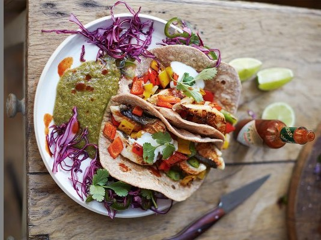

Como fazer tacos de peixe
"O chef Jamie Oliver ensina à fazer uma salsa de kiwi, e o pão
que será usado para os tacos."
__________________________________________

Ingredientes
Para fazer o pão dos tacos
- 100g de farinha de trigo integral
- Água
Para fazer a salsa
- 2 kiwis
- 4 cebolinhas
- 1 pimenta jalapeño ou chilli
- 1 maço de coentro
- 2 limões
- Molho de pimenta
Para fazer o taco
- 150g de repolho roxo
- 1 colher (sopa) de vinagre de vinho tinto
- 1/2 laranja
- 1 pimentão (vermelho ou amarelo)
- 2 filés de peixe branco (a carne tem que ser firme, como a do hadoque)
- Azeite de oliva
- 2 colheres (sopa) de iogurte
Modo de Preparo
Como fazer o pão
- Em um pote, junte a farinha integral, uma pitada e sal e 60ml de agua até formar uma massa.
- Reserve e comece a fazer a salsa.
- Divide a massa em quatro bolinhas e role até que fiquem finas.
- Cozinha cada uma na frigideira por um minuto, ou até ficarem macias.
- Cubra com uma toalha para deixálas aquecidas.
Como fazer a salsa
- Descasque e corte o kiwi ao meio, coloque em uma frigideira antiaderente, com a metade das cebolinhas e a pimenta jalapeño.
- Deixe cozinhar, e vire de vez em quando.
- Bata tudo no liquidificador com o maço de coentro, o suco do limão e o molho de pimenta, até atingir uma consistência homogênea.
- Tempere à seu gosto com sal e pimenta.
Como fazer os tacos
- Corte o repolho em fatias finas, e tempere com o vinagre e o suco de laranja. Reserve.
- Corte as cebolinhas e tire as sementes do pimentão.
- Corte o peixe em fatias de 2cm de largura, e coloque tudo em uma frigideira com um pouco de azeite.
- Cozinhe essa mistura por cerca de 4 minutos, ou até o peixe estar cozido e levemente dourado.
- Sirva o peixe com os legumes nos pães de tacos quentes, e a salada de repolho para acompanhar.
- Adicione a salsa e suco de limão por cima.